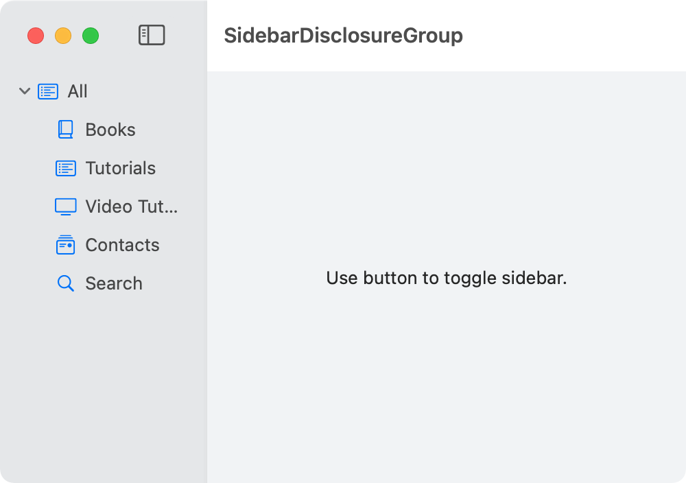

To organize our sidebar view, we can use DisclosureGroup. We can create different sections and specify if they are expanded by default when the application launches.

import SwiftUI
struct Sidebar: View {
@State private var isExpanded: Bool = true
var body: some View {
List {
DisclosureGroup(isExpanded:$isExpanded) {
Label("Books", systemImage: "book.closed")
Label("Tutorials", systemImage: "list.bullet.rectangle")
Label("Video Tutorials", systemImage: "tv")
Label("Contacts", systemImage: "mail.stack")
Label("Search", systemImage: "magnifyingglass")
} label: {
Label("All", systemImage: "list.bullet.rectangle")
}
}
.listStyle(SidebarListStyle())
.toolbar {
Button(action: toggleSidebar, label: {
Image(systemName: "sidebar.left").help("Toggle Sidebar")
})
}
.frame(minWidth: 150)
}
}
private func toggleSidebar() {
NSApp.keyWindow?.contentViewController?.tryToPerform(#selector(NSSplitViewController.toggleSidebar(_:)), with: nil)
}
struct ContentView: View {
var body: some View {
NavigationView {
Sidebar()
Text("Use button to toggle sidebar.")
.frame(minWidth: 200)
}
.frame(width: 500, height: 300)
}
}
import SwiftUI
@main
struct SidebarToggleApp: App {
var body: some Scene {
WindowGroup {
ContentView()
}
.commands {
SidebarCommands()
}
}
}
Gavin Wiggins © 2022